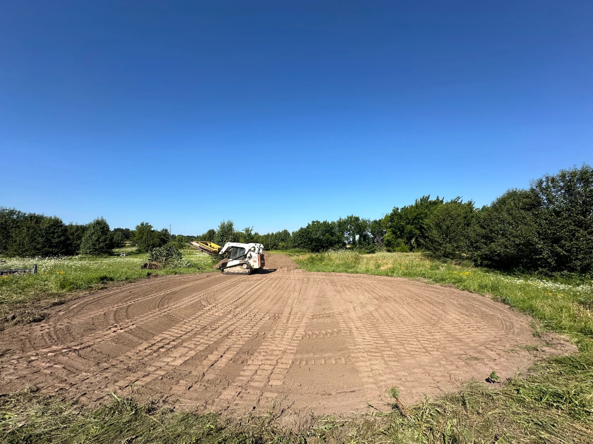
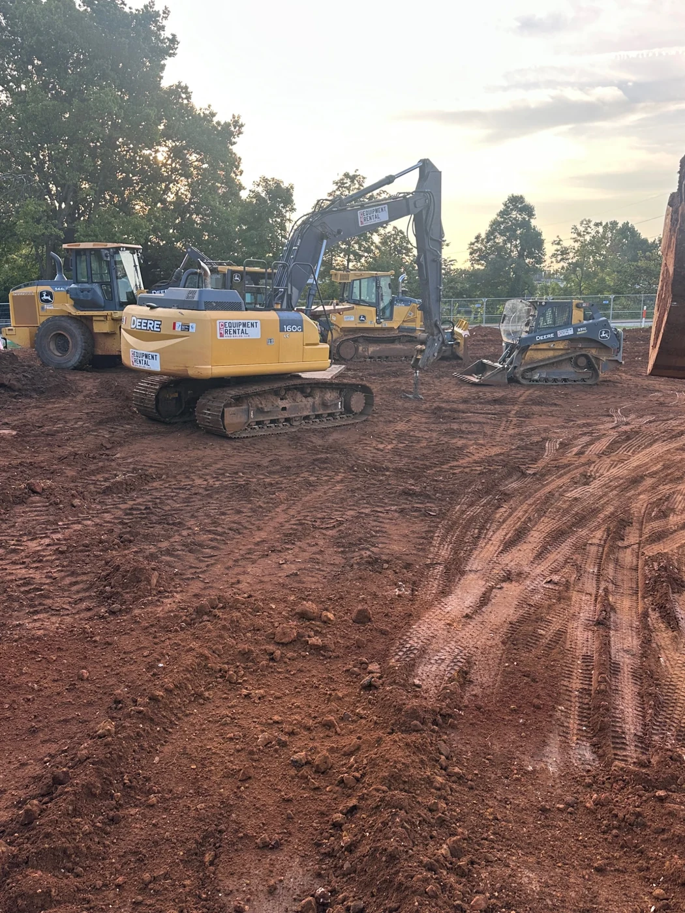
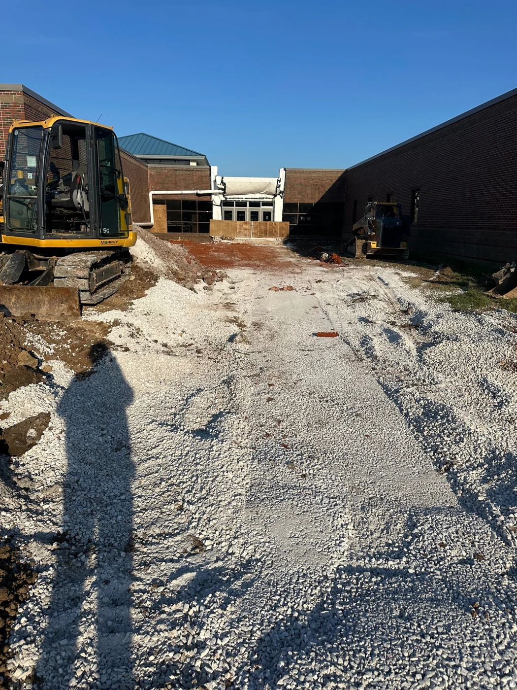

Site Preparation & Building Pads • Grand Lake, Oklahoma
Site Preparation
& Building Pads
House pads, shop pads, grading, and site preparation built to give the next phase of construction a solid start.
The Work
Preparing the ground for what comes next.
This page represents multiple Rafter E house and shop pad projects throughout the Grand Lake area. Each property brings different elevations, soils, drainage needs, and access considerations, so the site has to be prepared for the specific project being built.
Weather and sourcing the right material have been two of the biggest challenges on these jobs. Our focus is on proper grading, material placement, drainage, and creating a stable building area that is ready for the next phase of construction.
In the Field
From raw ground to a construction-ready site.



What We're Proud Of
The client reviews say it best.
A building pad becomes the foundation for everything that follows. For Rafter E, one of the best measures of a successful project is hearing from the property owner after the work is complete.
“What I’m most proud of with these projects is the feedback we’ve received from our clients. Seeing them happy with the finished site tells us we did our job right.”
Planning a House or Shop?